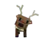
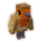
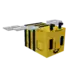
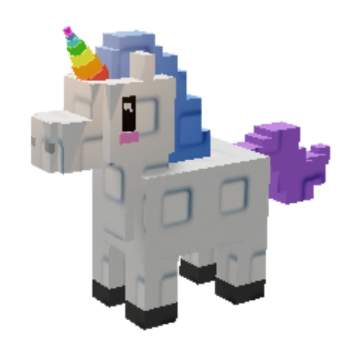
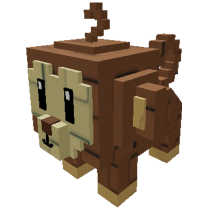
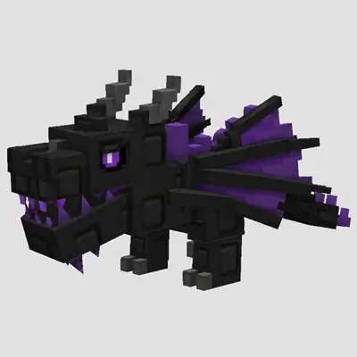
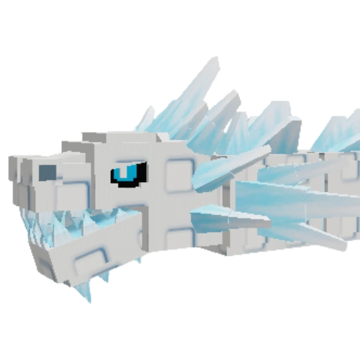

GAG2
Tier List
Grow a Garden 2 Pet Tier List
The pet system is one of the most adorable additions to Grow a Garden 2 that adds a touch of customization to your gameplay. Not only does your pet follow you all around the lobby, but they also come with some unique buffs that impact your income, movement speed, plant growth, and more. Check this list for the Grow a Garden 2 pet tier list, as it will help you choose the right pets with the best abilities.
📅 Updated: June 15, 2026
All Pets
Browse every pet in Grow a Garden 2. Click any card for ability, spawn details, size variants, and price notes.
Bunny
Common Map pet spawn 20kFrog
Common Map pet spawn 10kOwl
Uncommon Map pet spawn 25kBig Owl
Uncommon Map pet spawn 50k
Deer
Rare Map pet spawn 50k
Robin
Legendary Map pet spawn 75k
Bee
Legendary Map pet spawn 1MGolden Dragonfly
Mythic Map pet spawn 9M
Raccoon
Mythic Map pet spawn 15M
Unicorn
Mythic Map pet spawn 12M
Monkey
Mythic Map pet spawn Not confirmed
Black Dragon
Super Map pet spawn Not confirmed
Ice Serpent
Super Map pet spawn Not confirmedGrow a Garden 2 Pet Tier List: Overview
There are a total of 13 Grow a Garden 2 pets, which can be obtained by purchasing directly from the lobby. While some of these companions can offer bonuses that help throughout the stages of the game, others are more niche and useful only during specific circumstances. For the Grow a Garden 2 pet tier list, we have ranked them based on their passive buffs and defensive capabilities.
| Tier | Pets |
|---|---|
| S Tier | Raccoon, Unicorn, Black Dragon, Ice Serpent |
| A Tier | Bee, Golden Dragonfly, Deer, Bunny |
| B Tier | Frog |
| C Tier | Robin, Owl, Monkey |
While the S-Tier holds some of the best pets capable of providing you with game-changing bonuses, the ones in the lower tiers are helpful only during the early stages.
Grow a Garden 2 Pet Tier List Explained
As you can see in our GAG 2 tier list for pets, many sit at the S and A tiers. Given that the game revolves around stealing and defending, the aggressive pets rank higher in the list.
🌟 S-Tier Pets
In the S-Tier, most of the pets can provide the most overpowered bonuses and effects that can help you stack up cash easily. While the Raccoon pet has stealing abilities, the Unicorn provides better chances of plants being mutated to Rainbow. Apart from that, the Black Dragon and Ice Serpent can both provide tight protection to your base.
| Pet | Traits |
|---|---|
| Raccoon | Steals from other players during the night and increases the steal stash by +25 |
| Unicorn | Boosts the chances of crops getting the rainbow mutation |
| Black Dragon | Sets the intruders on fire |
| Ice Serpent | Freezes the intruders and turns them into ice |
⭐ A-Tier Pets
The A-Tier in the Grow a Garden 2 pet tier list consists of those companions who can grant you some highly useful buffs necessary for the core game mechanic. While the deer can boost the plant growth rate, the bunny hops around and boosts your movement speed. Other than that, the Golden Dragonfly flies in your garden and provides a bonus chance of plants having the golden mutation, whereas the Bee can protect your base from other players.
| Pet | Traits |
|---|---|
| Bee | Protects your plot and stings any incoming players who try to steal fruits. |
| Golden Dragonfly | Increases the chance of gold mutation among the plants in your garden |
| Deer | Increases the growth rate of plants in your garden |
| Bunny | Increases your movement speed, and the effect can stack with more bunnies in your team. |
🟢 B-Tier Pets
Coming to the B-Tier of pets, the only one standing here is the Frog. You may require such a pet at the early stages of the game when climbing taller plants is quite difficult. However, moving to the later and end-game stages, having such pets in your team would only occupy the slots and provide no benefit in return.
| Pet | Traits |
|---|---|
| Frog | Helps in increasing the jump height of the player |
⚪ C-Tier Pets
Finally, the C-Tier consists of the worst-performing pets in the game. Most of their buffs and abilities are so broken that you might not even receive a part of what they are really designed for. The Robin and Owl are the best examples because neither does the former give you good seeds, nor does the latter provide a useful ability.
Frequently Asked Questions
What is the best pet in Grow a Garden 2?
The best pets in Grow a Garden 2 are Raccoon, Unicorn, Black Dragon, and Ice Serpent. These S-Tier pets provide the most powerful bonuses including stealing, rainbow mutations, and base defense.
How do I get pets in Grow a Garden 2?
Pets randomly appear on the map. Walk up to them and purchase them with sheckles. Prices range from 10k for Common pets to 15M+ for Mythic and Super pets.
What does the Raccoon pet do in Grow a Garden 2?
Raccoon is an S-Tier pet that sneaks out at night to steal fruit from empty gardens and raises your steal limit by +25. Big Raccoon increases steal limit by +50 and Huge Raccoon by +75.
What pets are best for defense in Grow a Garden 2?
Black Dragon and Ice Serpent are the best defensive pets. Black Dragon breathes fire on intruders while Ice Serpent freezes them solid. Bee also provides protection by stinging intruders.
Do Big and Huge pets have better abilities?
Yes! Big and Huge variants typically provide improved bonuses. For example, Big Bunny gives +10 walk speed instead of +5, and Big Golden Dragonfly multiplies Gold chance by 3x instead of 2x.
All pet pages are actively maintained with latest ability and price updates.
Missing a pet? Contact us via Discord or the contact form.